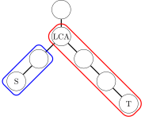
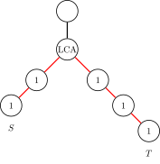

OI Wiki · prijevod · Osnove algoritamaOI Wiki · translation · Algorithm basics
Prefiksne sume i razlikePrefix sums & difference arrays
Sadržaj
Uvod
Prefiksne sume i razlike (difference array) tehnike su koje se često koriste na algoritamskim natjecanjima: prve služe za brzo računanje sume na intervalu, a druge za učinkovito mijenjanje cijelog intervala.
Dogovor
Radi lakšeg izlaganja, u ovom članku indeksi niza \(\{a_i\}\) počinju od \(1\), a dodatno definiramo \(a_0 = 0\).
Prefiksne sume
Prefiksnu sumu možemo jednostavno shvatiti kao „sumu prvih \(n\) članova niza”; to je važan oblik pretprocesiranja.
Jednodimenzionalne prefiksne sume
Ako za niz \(\{a_i\}\) duljine \(n\) treba više puta odgovoriti na upit o sumi brojeva na intervalu \([l,r]\), možemo razmotriti prefiksne sume. Prefiksna suma niza je
Može se izračunati član po član iz rekurzivne relacije
Za upit o sumi niza na intervalu \([l,r]\) dovoljno je izračunati razliku
Tako se pretprocesiranjem u vremenu \(O(n)\) složenost jednog upita za sumu intervala spušta na \(O(1)\).
Referentna implementacija
int n; // Array size.
std::vector<int> a; // Array. (indexed from 1)
std::vector<int> ps; // Prefix sum array.
// Calculate prefix sum.
void prefix_sum() {
ps = a;
// Or simply:
// std::partial_sum(a.begin(), a.end(), ps.begin());
for (int i = 1; i <= n; ++i) {
ps[i] += ps[i - 1];
}
}
// Query sum of elements in [l, r].
int query(int l, int r) { return ps[r] - ps[l - 1]; }
n = 0 # Array size
a = [] # Array (indexed from 1)
ps = [] # Prefix sum array
# Calculate prefix sum
def prefix_sum():
global ps
ps = a[:]
# Or simply:
# ps = list(itertools.accumulate(a))
for i in range(1, n + 1):
ps[i] += ps[i - 1]
# Query sum of elements in [l, r]
def query(l, r):
return ps[r] - ps[l - 1]
Standardna biblioteka C++-a implementira funkciju za prefiksne sume std::partial_sum, definiranu u zaglavlju <numeric>. Od C++17 standardna biblioteka nudi i funkcionalno jednaku funkciju za prefiksne sume std::inclusive_scan, također definiranu u zaglavlju <numeric>.
Dvodimenzionalne/višedimenzionalne prefiksne sume
Proširimo li jednodimenzionalne prefiksne sume na više dimenzija, dobivamo višedimenzionalne prefiksne sume. Postoje dvije uobičajene metode za njihovo računanje.
Pomoću formule uključivanja-isključivanja
Ova se metoda najčešće koristi za dvodimenzionalne prefiksne sume. Zadan je dvodimenzionalni niz \(A\) veličine \(m\times n\) i treba izračunati njegovu prefiksnu sumu \(S\). Tada je \(S\) također dvodimenzionalni niz veličine \(m\times n\) i vrijedi
Analogno jednodimenzionalnom slučaju, \(S_{i,j}\) bi se trebao moći izračunati iz \(S_{i-1,j}\) ili \(S_{i,j-1}\), čime izbjegavamo ponovno zbrajanje prethodnih članova. No ako jednostavno zbrojimo \(S_{i-1,j}\) i \(S_{i,j-1}\) te dodamo \(A_{i,j}\), prefiksnu sumu preklapajućeg dijela \(S_{i-1,j-1}\) brojimo dvaput, pa je taj dio treba još oduzeti. To je formula uključivanja-isključivanja. Dobivamo sljedeću rekurzivnu relaciju:
U implementaciji je dovoljno izravno proći po svim \((i,j)\) i zbrajati.
Primjer
Promotrimo konkretan primjer.
Ovdje je \(S\) prefiksna suma matrice \(A\). Po definiciji, \(S_{3,3}\) je suma podmatrice u isprekidanom okviru na lijevoj slici. Nadalje, \(S_{3,2}\) je suma plave podmatrice, \(S_{2,3}\) suma crvene podmatrice, a suma njihova preklapanja je \(S_{2,2}\). Vidimo da bismo izravnim zbrajanjem \(S_{3,2}\) i \(S_{2,3}\) dvaput brojili \(S_{2,2}\), pa mora vrijediti
Istim načelom, nakon što smo pretprocesirali dvodimenzionalne prefiksne sume, sumu podmatrice s gornjim lijevim kutom \((i_1,j_1)\) i donjim desnim kutom \((i_2,j_2)\) računamo kao
To se može obaviti u vremenu \(O(1)\).
U dvodimenzionalnom slučaju vremensku složenost gornjeg algoritma možemo jednostavno smatrati \(O(mn)\), tj. linearnom u veličini zadanog niza. No kad dimenzija \(k\) raste, broj članova u formuli uključivanja-isključivanja raste eksponencijalno, pa vremenska složenost postaje \(O(2^kN)\), gdje je \(k\) dimenzija niza, a \(N\) veličina zadanog niza. Zato taj algoritam više nije prikladan.
Luogu P1387 Najveći kvadrat
U matrici veličine \(n\times m\) koja sadrži samo \(0\) i \(1\) pronađite najveći kvadrat koji ne sadrži \(0\) i ispišite duljinu njegove stranice.
Referentni kod
#include <algorithm>
#include <iostream>
#include <vector>
int n, m;
std::vector<std::vector<int>> a, ps; // (n + 1) x (m + 1).
// Calculate the prefix sum of 2-d array.
void prefix_sum() {
ps = a;
for (int i = 1; i <= n; ++i)
for (int j = 1; j <= m; ++j)
ps[i][j] += ps[i - 1][j] + ps[i][j - 1] - ps[i - 1][j - 1];
}
// Find the sum of elements in submatrix [x1, y1] to [x2, y2].
int query(int x1, int y1, int x2, int y2) {
return ps[x2][y2] - ps[x1 - 1][y2] - ps[x2][y1 - 1] + ps[x1 - 1][y1 - 1];
}
int main() {
std::cin >> n >> m;
a.assign(n + 1, std::vector<int>(m + 1));
for (int i = 1; i <= n; i++)
for (int j = 1; j <= m; j++) std::cin >> a[i][j];
prefix_sum();
int ans = 0;
for (int l = 1; l <= std::min(n, m); ++l)
for (int i = l; i <= n; i++)
for (int j = l; j <= m; j++)
if (query(i - l + 1, j - l + 1, i, j) == l * l) ans = std::max(ans, l);
std::cout << ans << std::endl;
return 0;
}
n, m = 0, 0
a = [] # (n+1) x (m+1)
ps = [] # prefix sum array
# Calculate the prefix sum of 2D array.
def prefix_sum():
global ps
ps = [row[:] for row in a] # Deep copy of a
for i in range(1, n + 1):
for j in range(1, m + 1):
ps[i][j] += ps[i - 1][j] + ps[i][j - 1] - ps[i - 1][j - 1]
# Find the sum of elements in submatrix [x1, y1] to [x2, y2].
def query(x1, y1, x2, y2):
return ps[x2][y2] - ps[x1 - 1][y2] - ps[x2][y1 - 1] + ps[x1 - 1][y1 - 1]
if __name__ == "__main__":
n, m = map(int, input().split())
# Initialize with zero padding for 1-based indexing
a = [[0] * (m + 1)]
for _ in range(n):
row = list(map(int, input().split()))
a.append([0] + row)
prefix_sum()
ans = 0
for l in range(1, min(n, m) + 1):
for i in range(l, n + 1):
for j in range(l, m + 1):
if query(i - l + 1, j - l + 1, i, j) == l * l:
ans = max(ans, l)
print(ans)
Prefiksne sume dimenziju po dimenziju
U općem slučaju zadan je \(k\)-dimenzionalni niz \(A\) veličine \(N\) i također treba izračunati njegovu prefiksnu sumu \(S\). Ovdje je
Iz formule se vidi da je \(k\)-dimenzionalna prefiksna suma jednaka \(k\) uzastopnih sumiranja. Zato je očit algoritam sljedeći: u svakom koraku promatramo samo jednu dimenziju, fiksiramo sve ostale i računamo niz jednodimenzionalnih prefiksnih suma; nakon što to napravimo za svih \(k\) dimenzija, dobivamo \(k\)-dimenzionalnu prefiksnu sumu.
Referentna implementacija trodimenzionalne prefiksne sume
int N1, N2, N3;
std::vector<std::vector<std::vector<int>>> a,
ps; // (N1 + 1) x (N2 + 1) x (N3 + 1).
// Calculate prefix sum of 3d array.
void prefix_sum() {
ps = a;
// Prefix-sum for 3rd dimension.
for (int i = 1; i <= N1; ++i)
for (int j = 1; j <= N2; ++j)
for (int k = 1; k <= N3; ++k) ps[i][j][k] += ps[i][j][k - 1];
// Prefix-sum for 2nd dimension.
for (int i = 1; i <= N1; ++i)
for (int j = 1; j <= N2; ++j)
for (int k = 1; k <= N3; ++k) ps[i][j][k] += ps[i][j - 1][k];
// Prefix-sum for 1st dimension.
for (int i = 1; i <= N1; ++i)
for (int j = 1; j <= N2; ++j)
for (int k = 1; k <= N3; ++k) ps[i][j][k] += ps[i - 1][j][k];
}
Budući da za svaku dimenziju prolazimo cijeli niz samo jednom, složenost je ovog algoritma \(O(kN)\), što je obično prihvatljivo.
Poseban slučaj: DP po podskupovima (SOS)
Slučaj velike dimenzije često se pojavljuje u klasi problema zvanoj suma po podskupovima (sum over subsets, SOS). To je poseban slučaj višedimenzionalnih prefiksnih suma.
Problem glasi ovako. Promotrimo funkciju \(f\) definiranu na svim podskupovima skupa veličine \(n\); treba izračunati njezinu funkciju sume po podskupovima \(g\), za koju vrijedi
Dakle \(g(S)\) jednako je sumi vrijednosti \(f(T)\) po svim podskupovima \(T\subseteq S\).
Najprije, problem sume po podskupovima može se zapisati kao višedimenzionalna prefiksna suma. Uočimo da se svaki podskup \(S\) idejom bitmaske može prikazati kao 0-1 niz znakova \(s\) duljine \(n\), a podskup \(T\) nizom \(t\). Shvatimo li svaki bit niza znakova kao jednu dimenziju indeksa niza, \(f\) je zapravo \(n\)-dimenzionalni niz u kojem je indeks svake dimenzije iz \(\{0,1\}\). Ujedno, relacija sadržavanja podskupova ekvivalentna je odnosu veličine indeksa, tj.
Stoga je zbrajanje po podskupovima zapravo računanje prefiksne sume tog \(n\)-dimenzionalnog niza.
Sada možemo izravno primijeniti gore opisanu metodu prefiksnih suma dimenziju po dimenziju i dobiti sumu po podskupovima. Vremenska složenost je \(O(n2^n)\).
Referentna implementacija
int n;
std::vector<int> a, ps; // length = 1 << n.
void sum_of_subsets() {
ps = a;
// Loop over dimensions.
for (int i = 0; i < n; ++i) {
// Loop over i-th dimension.
for (int st = 0; st < (1 << n); ++st) {
// This condition implies that i-th dimension is 1.
if ((st >> i) & 1) {
// ps[... 1 ...] += ps[... 0 ...]. (i-th dimension)
ps[st] += ps[st ^ (1 << i)];
}
}
}
}
Inverzna operacija sume po podskupovima provodi se formulom uključivanja-isključivanja. Problem sume po podskupovima također je jedan od nužnih koraka brze Möbiusove transformacije.
Prefiksne sume na stablu
Jednodimenzionalne prefiksne sume mogu se poopćiti i na korijensko stablo (s korijenom \(1\)). Pretprocesiranjem prefiksnih suma možemo brzo izračunati sumu težina na putu u stablu.
Težine u čvorovima
Najprije razmotrimo slučaj kad su težine pohranjene u čvorovima. Neka čvor \(x\) ima težinu \(a_x\). Rekurzivnom relacijom
dobivamo sumu težina čvorova na putu od korijena do čvora \(x\), gdje \(\operatorname{fa}(x)\) označava roditelja čvora \(x\). Nakon pretprocesiranja prefiksnih suma, sumu težina čvorova na putu koji spaja čvorove \(x\) i \(y\) računamo kao
Ovdje \(\operatorname{lca}(x, y)\) označava najnižeg zajedničkog pretka (LCA) čvorova \(x\) i \(y\).
Težine na bridovima
Slučaj kad su težine pohranjene na bridovima gotovo se može svesti na slučaj težina u čvorovima. Za svaki čvor \(x\neq 1\) koji nije korijen neka \(\operatorname{edge}(x)\) označava brid koji spaja čvor \(x\) s njegovim roditeljem \(\operatorname{fa}(x)\). Tada možemo pretpostaviti da je težina brida pohranjena u čvoru udaljenijem od korijena. Drugim riječima, u čvoru \(x\) pohranjena je težina brida \(\operatorname{edge}(x)\). U korijenu je pohranjena težina \(0\). Tada istom rekurzivnom relacijom iz prethodnog odjeljka možemo pretprocesirati sumu \(S_x\) težina svih bridova na putu od korijena do čvora \(x\).
Sumu težina bridova na putu koji spaja čvorove \(x\) i \(y\) tada dobivamo upitom
Uočimo razliku prema slučaju težina u čvorovima: tražena suma ne uključuje težinu pohranjenu u \(\operatorname{lca}(x, y)\), jer brid čiju težinu on čuva nije na traženom putu.
Suma po podstablu
Za razliku od nizova, stablo nije simetrično s obzirom na početak i kraj, pa „prefiksna suma” računana odozdo prema gore (od listova prema korijenu) i odozgo prema dolje (od korijena prema listovima) ne daje isti rezultat. Pod „prefiksnom sumom na stablu” obično se podrazumijeva prefiksna suma računana odozgo prema dolje. Radi lakšeg izlaganja, „prefiksnu sumu” računanu odozdo prema gore u ovom članku zovemo suma po podstablu.
Suma težina čvorova u podstablu s korijenom \(x\), tj. odgovarajuća suma po podstablu, jest
Ovdje \(\operatorname{desc}(x)\) označava skup svih potomaka čvora \(x\) (uključujući njega samog).
Za razliku od prefiksnih suma na stablu, suma po podstablu ne može se iskoristiti za računanje sume težina na putu u \(O(1)\), ali pomaže u razumijevanju razlika na stablu iz nastavka.
Razlike
Razlike (difference array) strategija su suprotna prefiksnim sumama: to je inverzna operacija prefiksne sume. Umjesto da za zadani niz tražimo njegov niz razlika, na natjecanjima je češća situacija da održavanjem niza razlika ostvarujemo više izmjena na intervalima. Nakon što izmjene intervala završe, prefiksnom sumom možemo vratiti izvorni niz i odgovarati na upite o njemu. Pazite: sve izmjene moraju doći prije upita.
Ako treba podržati miješane izmjene i upite više puta, treba koristiti Fenwick tree, no ideja je ista.
Jednodimenzionalne razlike
Niz razlika \(\{D_i\}\) niza \(\{a_i\}\) definiran je kao
Standardna biblioteka C++-a implementira funkciju razlika std::adjacent_difference, definiranu u zaglavlju <numeric>.
Odnos prefiksnih suma i razlika je sljedeći:
Svojstvo
Neka je \(\{D_i\}\) niz razlika niza \(\{a_i\}\). Tada vrijedi:
-
niz \(\{a_i\}\) je prefiksna suma niza \(\{D_i\}\), tj.
\[ a_i = \sum_{j=1}^i D_j. \] -
prefiksna suma niza \(\{a_i\}\) jest
\[ S_i = \sum_{j=1}^i\sum_{k=1}^jD_k = \sum_{j=1}^i(i-j+1)D_j. \]
Niz razlika često se koristi kad više puta treba dodati broj svim članovima nekog intervala niza, a zatim jednom ili više puta pitati za vrijednost nekog člana niza.
Pretpostavimo da svakom broju niza \(\{a_i\}\) na intervalu \([l,r]\) treba dodati \(v\). Na njegovu nizu razlika \(\{D_i\}\) možemo napraviti sljedeće:
Nakon što sve izmjene završe, prefiksnom sumom možemo vratiti ažurirane vrijednosti \(\{a_i\}\). Jedna izmjena je \(O(1)\). Za upite treba jednom izračunati prefiksnu sumu u \(O(n)\), a zatim je svaki upit \(O(1)\).
Referentni kod
int n;
std::vector<int> diff, a;
// Add v to each element in [l, r].
void add(int l, int r, int v) {
diff[l] += v;
if (r < n) diff[r + 1] -= v;
}
// Execute this after all modifications and before all queries.
void prefix_sum() {
for (int i = 1; i <= n; ++i) a[i] = a[i - 1] + diff[i];
}
Dvodimenzionalne/višedimenzionalne razlike
Razlike se također mogu poopćiti na više dimenzija. Shvatimo li višedimenzionalne razlike kao inverznu operaciju višedimenzionalnih prefiksnih suma, računanje višedimenzionalnog niza razlika odgovara računanju izvornog niza iz višedimenzionalne prefiksne sume. Prema prethodnom razmatranju možemo iskoristiti formulu uključivanja-isključivanja. Npr. dvodimenzionalne razlike definirane su kao
No ako treba izračunati cijeli niz razlika, jednostavniji i učinkovitiji način su razlike dimenziju po dimenziju: prolazimo sve dimenzije i duž svake izračunamo razlike niza.
Dvodimenzionalne razlike često se koriste kad se u dvodimenzionalnom nizu više puta dodaje vrijednost cijelom pravokutniku. Npr. da bismo svakom broju u matrici s gornjim lijevim kutom \((x_1,y_1)\) i donjim desnim kutom \((x_2,y_2)\) dodali \(v\), na njezinu nizu razlika \(\{D_{i,j}\}\) napravimo sljedeće:
Nakon što sve izmjene završe, dovoljno je jednom izračunati dvodimenzionalnu prefiksnu sumu da bismo brzo dobivali vrijednosti ažuriranog niza.
Referentni kod
int n, m;
std::vector<std::vector<int>> diff, a;
// Add v to each element from [x1, y1] to [x2, y2].
void add(int x1, int y1, int x2, int y2, int v) {
diff[x1][y1] += v;
if (x2 < n) diff[x2 + 1][y1] -= v;
if (y2 < m) diff[x1][y2 + 1] -= v;
if (x2 < n && y2 < m) diff[x2 + 1][y2 + 1] += v;
}
// Execute this after all modifications and before all queries.
void prefix_sum() {
a = diff;
for (int i = 1; i <= n; ++i)
for (int j = 1; j <= m; ++j) a[i][j] += a[i - 1][j];
for (int i = 1; i <= n; ++i)
for (int j = 1; j <= m; ++j) a[i][j] += a[i][j - 1];
}
Naravno, slična ideja vrijedi i za dimenzije \(k>2\), ali jedna izmjena tada zahtijeva vrijeme \(O(2^k)\), što s rastom \(k\) prestaje biti praktično.
Razlike na stablu
Razlike se mogu poopćiti na korijensko stablo i tako ostvariti dodavanje na cijelom putu u stablu. Ovisno o tome čuvaju li se podaci u čvorovima ili na bridovima, razlike na stablu dijelimo na razlike po čvorovima i razlike po bridovima, koje se u implementaciji malo razlikuju. Osim toga, umjesto prefiksnih suma na stablu, češće se nakon svih izmjena računa suma po podstablu, a zatim se odgovara na upite. Upravo taj slučaj razmatramo u ovom odjeljku.
Razlike po čvorovima
Ako svim težinama čvorova na putu između čvorova \(x\) i \(y\) treba dodati \(v\), na nizu razlika \(\{D_x\}\) napravimo sljedeće:
Nakon što sve izmjene završe, jednim računanjem sume po podstablu dobivamo ažurirane težine čvorova.
Primjer
Pri dodavanju na težine čvorova na putu između čvorova \(S\) i \(T\), prve dvije formule gore odgovaraju jednodimenzionalnoj operaciji razlika na putu u plavom okviru, a druge dvije jednodimenzionalnoj operaciji razlika na putu u crvenom okviru:

Zbrajanje odozdo prema gore odgovara računanju prefiksnih suma tih dvaju intervala odozdo prema gore. Usporedbom s gore opisanom jednodimenzionalnom operacijom razlika vidi se ispravnost razlika po čvorovima.
Razlike po bridovima
Ako svim težinama bridova na putu između čvorova \(x\) i \(y\) treba dodati \(v\), na nizu razlika \(\{D_x\}\) napravimo sljedeće:
Nakon što sve izmjene završe, jednim računanjem sume po podstablu dobivamo ažurirane težine bridova (pohranjene u djetetu odgovarajućeg brida).
Primjer
Kao na slici, razlike po bridovima mogu riješiti problem dodavanja na težine bridova na crvenom putu.

Budući da je razlike teško voditi izravno na bridovima, vrijednosti koje bi se trebale zbrajati na crvenim bridovima pomičemo prema dolje u susjedne čvorove, čime operacije postaju jednostavne. Usporedbom s formulama za razlike po čvorovima razumijemo formule za razlike po bridovima.
Primjer zadatka
USACO15DEC Max Flow
FJ je između \(N(2 \le N \le 50,000)\) pregrada u svojoj staji postavio \(N-1\) cijev. Sve su pregrade povezane cijevima.
FJ ima \(K(1 \le K \le 100,000)\) ruta za prijevoz mlijeka; \(i\)-ta ruta prevozi mlijeko iz pregrade \(s_i\) u pregradu \(t_i\). Jedna ruta donosi jednu jedinicu pritiska objema krajnjim pregradama i svim pregradama kroz koje prolazi. Izračunajte pritisak u pregradi s najvećim pritiskom.
Ideja rješenja
Treba izbrojiti koliko puta je svaki čvor posjećen, pa razlikama na stablu svim čvorovima na putu svake rute dodamo jedan i brzo dobijemo broj posjeta svakog čvora. Ovdje LCA računamo binarnim podizanjem (binary lifting), a na kraju DFS-om prolazimo cijelo stablo i pri povratku zbrajamo niz razlika, čime dobivamo odgovor.
Referentni kod
#include <algorithm>
#include <iostream>
using namespace std;
constexpr int MAXN = 50010;
struct node {
int to, next;
} edge[MAXN << 1];
int fa[MAXN][30], head[MAXN << 1];
int power[MAXN];
int depth[MAXN], lg[MAXN];
int n, k, ans = 0, tot = 0;
void add(int x, int y) { // dodavanje brida
edge[++tot].to = y;
edge[tot].next = head[x];
head[x] = tot;
}
void dfs(int now, int father) { // DFS predobrada dubina čvorova i binary-lifting predaka
fa[now][0] = father;
depth[now] = depth[father] + 1;
for (int i = 1; i <= lg[depth[now]]; ++i)
fa[now][i] = fa[fa[now][i - 1]][i - 1];
for (int i = head[now]; i; i = edge[i].next)
if (edge[i].to != father) dfs(edge[i].to, now);
}
int lca(int x, int y) { // računanje LCA, najnižeg zajedničkog pretka
if (depth[x] < depth[y]) swap(x, y);
while (depth[x] > depth[y]) x = fa[x][lg[depth[x] - depth[y]] - 1];
if (x == y) return x;
for (int k = lg[depth[x]] - 1; k >= 0; k--) {
if (fa[x][k] != fa[y][k]) x = fa[x][k], y = fa[y][k];
}
return fa[x][0];
}
// DFS-om zbrajamo razlike po podstablima, računamo opterećenje svakog čvora i ažuriramo maksimum
void get_ans(int u, int father) {
for (int i = head[u]; i; i = edge[i].next) {
int to = edge[i].to;
if (to == father) continue;
get_ans(to, u);
power[u] += power[to];
}
ans = max(ans, power[u]);
}
int main() {
cin.tie(nullptr)->sync_with_stdio(false);
cin >> n >> k;
int x, y;
for (int i = 1; i <= n; i++) {
lg[i] = lg[i - 1] + (1 << lg[i - 1] == i);
}
for (int i = 1; i <= n - 1; i++) { // gradnja grafa
cin >> x >> y;
add(x, y);
add(y, x);
}
dfs(1, 0);
int s, t;
for (int i = 1; i <= k; i++) {
cin >> s >> t;
int ancestor = lca(s, t);
// razlike na stablu
power[s]++;
power[t]++;
power[ancestor]--;
power[fa[ancestor][0]]--;
}
get_ans(1, 0);
cout << ans << '\n';
return 0;
}
Zadaci za vježbu
Prefiksne sume:
- Luogu B3612 Suma intervala
- Luogu U69096 Inverz prefiksne sume
- AtCoder joi2007ho_a Najveća suma
- USACO16JAN Subsequences Summing to Sevens
- USACO05JAN Moo Volume S
Dvodimenzionalne/višedimenzionalne prefiksne sume:
- HDU 6514 Monitor
- Luogu P1387 Najveći kvadrat
- HNOI2003 Laserska bomba
- CF 165E Compatible Numbers
- CF 383E Vowels
- ARC 100C Or Plus Max
Prefiksne sume na stablu:
Razlike:
- Fenwick tree 3: izmjena intervala, upit na intervalu
- Poetize6 IncDec Sequence
- Luogu P4231 Tri koraka do pobjede
Dvodimenzionalne/višedimenzionalne razlike:
Razlike na stablu:
Contents
Introduction
Prefix sums and difference arrays are techniques commonly used in algorithm competitions: the former for quickly computing range sums, the latter for efficiently performing range updates.
Convention
For ease of discussion, in this article the indices of the array \(\{a_i\}\) start from \(1\), and we additionally define \(a_0 = 0\).
Prefix sums
A prefix sum can be simply understood as "the sum of the first \(n\) terms of a sequence"; it is an important form of preprocessing.
One-dimensional prefix sums
For a sequence \(\{a_i\}\) of length \(n\), if we need to answer many queries for the sum of the numbers in a range \([l,r]\), we can consider using prefix sums. The prefix sum of the sequence is
It can be computed term by term from the recurrence
To query the sum of the sequence over the range \([l,r]\), we only need to compute the difference
Thus, with \(O(n)\) preprocessing, the complexity of a single range-sum query is reduced to \(O(1)\).
Reference implementation
int n; // Array size.
std::vector<int> a; // Array. (indexed from 1)
std::vector<int> ps; // Prefix sum array.
// Calculate prefix sum.
void prefix_sum() {
ps = a;
// Or simply:
// std::partial_sum(a.begin(), a.end(), ps.begin());
for (int i = 1; i <= n; ++i) {
ps[i] += ps[i - 1];
}
}
// Query sum of elements in [l, r].
int query(int l, int r) { return ps[r] - ps[l - 1]; }
n = 0 # Array size
a = [] # Array (indexed from 1)
ps = [] # Prefix sum array
# Calculate prefix sum
def prefix_sum():
global ps
ps = a[:]
# Or simply:
# ps = list(itertools.accumulate(a))
for i in range(1, n + 1):
ps[i] += ps[i - 1]
# Query sum of elements in [l, r]
def query(l, r):
return ps[r] - ps[l - 1]
The C++ standard library implements the prefix-sum function std::partial_sum, defined in the header <numeric>. Since C++17 the standard library also provides a functionally identical prefix-sum function, std::inclusive_scan, likewise defined in the header <numeric>.
Two-dimensional/multidimensional prefix sums
Extending one-dimensional prefix sums to several dimensions gives multidimensional prefix sums. There are two common methods for computing them.
Based on the inclusion-exclusion principle
This method is mostly used for two-dimensional prefix sums. Given a two-dimensional array \(A\) of size \(m\times n\), we want its prefix sum \(S\). Then \(S\) is also a two-dimensional array of size \(m\times n\), and
By analogy with the one-dimensional case, \(S_{i,j}\) should be computable from \(S_{i-1,j}\) or \(S_{i,j-1}\), which avoids re-summing the earlier terms. However, if we simply add \(S_{i-1,j}\) and \(S_{i,j-1}\) and then add \(A_{i,j}\), the prefix sum of the overlapping part \(S_{i-1,j-1}\) is counted twice, so this part has to be subtracted again. This is the inclusion-exclusion principle. We obtain the following recurrence:
In the implementation, it suffices to iterate over all \((i,j)\) directly and sum.
Example
Consider a concrete example.
Here \(S\) is the prefix sum of the matrix \(A\). By definition, \(S_{3,3}\) is the sum of the submatrix inside the dashed box in the left figure. Moreover, \(S_{3,2}\) is the sum of the blue submatrix, \(S_{2,3}\) is the sum of the red submatrix, and the sum of their overlap is \(S_{2,2}\). We see that adding \(S_{3,2}\) and \(S_{2,3}\) directly would count \(S_{2,2}\) twice, so we should have
By the same reasoning, once the two-dimensional prefix sums have been preprocessed, the sum of the submatrix with upper-left corner \((i_1,j_1)\) and lower-right corner \((i_2,j_2)\) can be computed as
This can be done in \(O(1)\) time.
In the two-dimensional case, the time complexity of the above algorithm can simply be regarded as \(O(mn)\), i.e. linear in the size of the given array. However, as the dimension \(k\) grows, the number of terms involved in inclusion-exclusion grows exponentially, so the time complexity becomes \(O(2^kN)\), where \(k\) is the dimension of the array and \(N\) is the size of the given array. Hence this algorithm is no longer suitable.
Luogu P1387 Largest Square
In an \(n\times m\) matrix containing only \(0\)s and \(1\)s, find the largest square that contains no \(0\) and output its side length.
Reference code
#include <algorithm>
#include <iostream>
#include <vector>
int n, m;
std::vector<std::vector<int>> a, ps; // (n + 1) x (m + 1).
// Calculate the prefix sum of 2-d array.
void prefix_sum() {
ps = a;
for (int i = 1; i <= n; ++i)
for (int j = 1; j <= m; ++j)
ps[i][j] += ps[i - 1][j] + ps[i][j - 1] - ps[i - 1][j - 1];
}
// Find the sum of elements in submatrix [x1, y1] to [x2, y2].
int query(int x1, int y1, int x2, int y2) {
return ps[x2][y2] - ps[x1 - 1][y2] - ps[x2][y1 - 1] + ps[x1 - 1][y1 - 1];
}
int main() {
std::cin >> n >> m;
a.assign(n + 1, std::vector<int>(m + 1));
for (int i = 1; i <= n; i++)
for (int j = 1; j <= m; j++) std::cin >> a[i][j];
prefix_sum();
int ans = 0;
for (int l = 1; l <= std::min(n, m); ++l)
for (int i = l; i <= n; i++)
for (int j = l; j <= m; j++)
if (query(i - l + 1, j - l + 1, i, j) == l * l) ans = std::max(ans, l);
std::cout << ans << std::endl;
return 0;
}
n, m = 0, 0
a = [] # (n+1) x (m+1)
ps = [] # prefix sum array
# Calculate the prefix sum of 2D array.
def prefix_sum():
global ps
ps = [row[:] for row in a] # Deep copy of a
for i in range(1, n + 1):
for j in range(1, m + 1):
ps[i][j] += ps[i - 1][j] + ps[i][j - 1] - ps[i - 1][j - 1]
# Find the sum of elements in submatrix [x1, y1] to [x2, y2].
def query(x1, y1, x2, y2):
return ps[x2][y2] - ps[x1 - 1][y2] - ps[x2][y1 - 1] + ps[x1 - 1][y1 - 1]
if __name__ == "__main__":
n, m = map(int, input().split())
# Initialize with zero padding for 1-based indexing
a = [[0] * (m + 1)]
for _ in range(n):
row = list(map(int, input().split()))
a.append([0] + row)
prefix_sum()
ans = 0
for l in range(1, min(n, m) + 1):
for i in range(l, n + 1):
for j in range(l, m + 1):
if query(i - l + 1, j - l + 1, i, j) == l * l:
ans = max(ans, l)
print(ans)
Dimension-by-dimension prefix sums
In the general case, given a \(k\)-dimensional array \(A\) of size \(N\), we again want its prefix sum \(S\). Here,
From the formula we can see that a \(k\)-dimensional prefix sum equals \(k\) successive summations. So an obvious algorithm is: at each step consider only one dimension, fix all the other dimensions, and compute a number of one-dimensional prefix sums; after doing this for all \(k\) dimensions, the result is the \(k\)-dimensional prefix sum.
Reference implementation of a three-dimensional prefix sum
int N1, N2, N3;
std::vector<std::vector<std::vector<int>>> a,
ps; // (N1 + 1) x (N2 + 1) x (N3 + 1).
// Calculate prefix sum of 3d array.
void prefix_sum() {
ps = a;
// Prefix-sum for 3rd dimension.
for (int i = 1; i <= N1; ++i)
for (int j = 1; j <= N2; ++j)
for (int k = 1; k <= N3; ++k) ps[i][j][k] += ps[i][j][k - 1];
// Prefix-sum for 2nd dimension.
for (int i = 1; i <= N1; ++i)
for (int j = 1; j <= N2; ++j)
for (int k = 1; k <= N3; ++k) ps[i][j][k] += ps[i][j - 1][k];
// Prefix-sum for 1st dimension.
for (int i = 1; i <= N1; ++i)
for (int j = 1; j <= N2; ++j)
for (int k = 1; k <= N3; ++k) ps[i][j][k] += ps[i - 1][j][k];
}
Since for each dimension the whole array is traversed only once, the complexity of this algorithm is \(O(kN)\), which is usually acceptable.
Special case: sum over subsets DP
The high-dimensional case often appears in a class of problems called sum over subsets (SOS). This is a special case of high-dimensional prefix sums.
The problem is as follows. Consider a function \(f\) defined on all subsets of a set of size \(n\); we want its sum-over-subsets function \(g\), which satisfies
That is, \(g(S)\) equals the sum of the values \(f(T)\) over all its subsets \(T\subseteq S\).
First, the sum-over-subsets problem can be written in the form of a high-dimensional prefix sum. Note that any subset \(S\) can be represented, using the idea of bitmasks, as a 0-1 string \(s\) of length \(n\), and a subset \(T\) corresponds to a string \(t\). Treat each bit of the string as one dimension of the array index; then \(f\) is really an \(n\)-dimensional array in which every index is in \(\{0,1\}\). At the same time, the subset relation is equivalent to the ordering of indices, i.e.
Therefore, summing over subsets is computing the prefix sum of this \(n\)-dimensional array.
Now we can directly use the dimension-by-dimension prefix-sum method described above to obtain the sum over subsets. The time complexity is \(O(n2^n)\).
Reference implementation
int n;
std::vector<int> a, ps; // length = 1 << n.
void sum_of_subsets() {
ps = a;
// Loop over dimensions.
for (int i = 0; i < n; ++i) {
// Loop over i-th dimension.
for (int st = 0; st < (1 << n); ++st) {
// This condition implies that i-th dimension is 1.
if ((st >> i) & 1) {
// ps[... 1 ...] += ps[... 0 ...]. (i-th dimension)
ps[st] += ps[st ^ (1 << i)];
}
}
}
}
The inverse of the sum over subsets is carried out via the inclusion-exclusion principle. The sum-over-subsets problem is also one of the necessary steps of the fast Möbius transform.
Prefix sums on trees
One-dimensional prefix sums can also be generalized to rooted trees (with root \(1\)). By preprocessing prefix sums we can quickly compute the sum of weights along a path in the tree.
Weights on vertices
First we discuss the case where the weights are stored at the vertices. Let vertex \(x\) have weight \(a_x\). Through the recurrence
we obtain the sum of the weights of the vertices on the path from the root to vertex \(x\), where \(\operatorname{fa}(x)\) denotes the parent of \(x\). After preprocessing the prefix sums, the sum of vertex weights on the path connecting vertices \(x\) and \(y\) can be computed as
Here \(\operatorname{lca}(x, y)\) denotes the lowest common ancestor (LCA) of vertices \(x\) and \(y\).
Weights on edges
The case where the weights are stored on the edges can almost be reduced to the vertex-weight case. For every non-root vertex \(x\neq 1\), let \(\operatorname{edge}(x)\) denote the edge connecting vertex \(x\) to its parent \(\operatorname{fa}(x)\). Then we may assume that the edge weight is stored at the vertex farther from the root. In other words, vertex \(x\) stores the weight of the edge \(\operatorname{edge}(x)\). The root stores the weight \(0\). Then, using the recurrence discussed in the previous subsection, we can likewise preprocess the sum \(S_x\) of the weights of all edges on the path from the root to vertex \(x\).
Now the sum of the edge weights on the path connecting vertices \(x\) and \(y\) can be queried as
Note that, unlike the vertex-weight case, the queried sum does not include the weight stored at \(\operatorname{lca}(x, y)\), because the edge weight it stores is not on the desired path.
Subtree sums
Unlike arrays, a tree is not symmetric between its two ends, so computing a "prefix sum" bottom-up (from leaves to root) and top-down (from root to leaves) gives different results. In general, "prefix sums on trees" refers to the prefix sum computed top-down. For ease of discussion, this article calls the "prefix sum" computed bottom-up the subtree sum.
The sum of the vertex weights of the subtree rooted at vertex \(x\), i.e. the corresponding subtree sum, is
Here \(\operatorname{desc}(x)\) denotes the set of all descendants of \(x\) (including \(x\) itself).
Unlike prefix sums on trees, subtree sums cannot be used to compute path weight sums in \(O(1)\), but they help in understanding the tree difference arrays below.
Difference arrays
Difference arrays are the strategy opposite to prefix sums: the inverse operation of the prefix sum. Rather than computing the difference array of a given sequence, the more common scenario in competitions is to maintain the difference array in order to perform many range updates. After the range updates are finished, the original sequence can be recovered via prefix sums to answer queries about it. Note that all updates must come before the queries.
If mixed updates and queries have to be supported many times, a Fenwick tree is needed, but the underlying idea is the same.
One-dimensional difference arrays
For a sequence \(\{a_i\}\), its difference array \(\{D_i\}\) is
The C++ standard library implements the difference function std::adjacent_difference, defined in the header <numeric>.
The relationship between prefix sums and difference arrays is as follows:
Property
Let \(\{D_i\}\) be the difference array of \(\{a_i\}\). Then:
-
the sequence \(\{a_i\}\) is the prefix sum of the sequence \(\{D_i\}\), i.e.
\[ a_i = \sum_{j=1}^i D_j. \] -
the prefix sum of the sequence \(\{a_i\}\) is
\[ S_i = \sum_{j=1}^i\sum_{k=1}^jD_k = \sum_{j=1}^i(i-j+1)D_j. \]
Difference arrays are often used when a number has to be added to a range of the sequence many times, and afterwards the value at some position of the sequence is queried one or more times.
Suppose we want to add \(v\) to every number of the sequence \(\{a_i\}\) in the range \([l,r]\). We can do the following on its difference array \(\{D_i\}\):
After all updates are finished, the updated values of \(\{a_i\}\) can be recovered with a prefix-sum pass. A single update is \(O(1)\). For queries, one \(O(n)\) prefix-sum pass is needed, after which every query is \(O(1)\).
Reference code
int n;
std::vector<int> diff, a;
// Add v to each element in [l, r].
void add(int l, int r, int v) {
diff[l] += v;
if (r < n) diff[r + 1] -= v;
}
// Execute this after all modifications and before all queries.
void prefix_sum() {
for (int i = 1; i <= n; ++i) a[i] = a[i - 1] + diff[i];
}
Two-dimensional/multidimensional difference arrays
Difference arrays can likewise be generalized to several dimensions. If we regard the multidimensional difference array as the inverse of the multidimensional prefix sum, then computing the multidimensional difference array amounts to recovering the original array from its multidimensional prefix sum. By the earlier discussion, we can use inclusion-exclusion. For example, the two-dimensional difference array is defined as
However, if the whole difference array has to be computed, the simpler and more efficient approach is dimension-by-dimension differencing: enumerate all dimensions and compute the differences of the array along each of them.
Two-dimensional difference arrays are often used for many rectangle additions on a two-dimensional array. For example, to add \(v\) to every number in the matrix with upper-left corner \((x_1,y_1)\) and lower-right corner \((x_2,y_2)\), we can do the following on its difference array \(\{D_{i,j}\}\):
After all updates are finished, a single two-dimensional prefix-sum pass is enough to quickly query the values of the updated array.
Reference code
int n, m;
std::vector<std::vector<int>> diff, a;
// Add v to each element from [x1, y1] to [x2, y2].
void add(int x1, int y1, int x2, int y2, int v) {
diff[x1][y1] += v;
if (x2 < n) diff[x2 + 1][y1] -= v;
if (y2 < m) diff[x1][y2 + 1] -= v;
if (x2 < n && y2 < m) diff[x2 + 1][y2 + 1] += v;
}
// Execute this after all modifications and before all queries.
void prefix_sum() {
a = diff;
for (int i = 1; i <= n; ++i)
for (int j = 1; j <= m; ++j) a[i][j] += a[i - 1][j];
for (int i = 1; i <= n; ++i)
for (int j = 1; j <= m; ++j) a[i][j] += a[i][j - 1];
}
Of course, the same idea also works for dimensions \(k>2\), but a single update then needs \(O(2^k)\) time, which becomes impractical as \(k\) grows.
Difference arrays on trees
Difference arrays can be generalized to rooted trees to implement range additions along a path in the tree. Depending on whether the maintained information is stored on vertices or on edges, tree difference arrays are divided into vertex differences and edge differences, which differ slightly in implementation. Also, rather than tree prefix sums, it is more common to compute subtree sums after all updates and then answer queries. This is the case discussed in this section.
Vertex differences
To add \(v\) to all vertex weights on the path between vertices \(x\) and \(y\), we can do the following on the difference array \(\{D_x\}\):
After all updates are finished, a single subtree-sum pass yields the updated vertex weights.
Example
When performing a range addition on the vertex weights of the path between vertices \(S\) and \(T\), the first two formulas above perform a one-dimensional difference operation on the path in the blue box, and the last two perform a one-dimensional difference operation on the path in the red box:
Summing bottom-up amounts to computing the prefix sums of these two ranges from bottom to top. Comparing with the one-dimensional difference operation above shows the correctness of vertex differences.
Edge differences
To add \(v\) to all edge weights on the path between vertices \(x\) and \(y\), we can do the following on the difference array \(\{D_x\}\):
After all updates are finished, a single subtree-sum pass yields the updated edge weights (stored at the child vertex of the corresponding edge).
Example
As shown in the figure, edge differences can be used to solve the range addition on the edge weights of the red path.
Since differencing directly on edges is difficult, the values that should be accumulated on the red edges are moved down into the adjacent vertices, which makes the operation convenient. Comparing with the vertex-difference formulas explains the edge-difference formulas.
Example problem
USACO15DEC Max Flow
FJ has installed \(N-1\) pipes between the \(N(2 \le N \le 50,000)\) stalls of his barn. All stalls are connected by the pipes.
FJ has \(K(1 \le K \le 100,000)\) milk transport routes; the \(i\)-th route transports from stall \(s_i\) to stall \(t_i\). A transport route adds one unit of pressure to the stalls at its two endpoints and to every stall it passes through along the way. Compute the pressure of the stall with the greatest pressure.
Solution idea
We need to count how many times each vertex is passed through, so we use tree difference arrays to add one to every vertex on each route's path, which quickly gives the number of times each vertex is visited. Here LCA is computed with binary lifting, and finally a DFS traverses the whole tree, summing the difference array while backtracking to obtain the answer.
Reference code
#include <algorithm>
#include <iostream>
using namespace std;
constexpr int MAXN = 50010;
struct node {
int to, next;
} edge[MAXN << 1];
int fa[MAXN][30], head[MAXN << 1];
int power[MAXN];
int depth[MAXN], lg[MAXN];
int n, k, ans = 0, tot = 0;
void add(int x, int y) { // add an edge
edge[++tot].to = y;
edge[tot].next = head[x];
head[x] = tot;
}
void dfs(int now, int father) { // DFS to precompute node depths and binary-lifting ancestors
fa[now][0] = father;
depth[now] = depth[father] + 1;
for (int i = 1; i <= lg[depth[now]]; ++i)
fa[now][i] = fa[fa[now][i - 1]][i - 1];
for (int i = head[now]; i; i = edge[i].next)
if (edge[i].to != father) dfs(edge[i].to, now);
}
int lca(int x, int y) { // compute the LCA, the lowest common ancestor
if (depth[x] < depth[y]) swap(x, y);
while (depth[x] > depth[y]) x = fa[x][lg[depth[x] - depth[y]] - 1];
if (x == y) return x;
for (int k = lg[depth[x]] - 1; k >= 0; k--) {
if (fa[x][k] != fa[y][k]) x = fa[x][k], y = fa[y][k];
}
return fa[x][0];
}
// use DFS to accumulate the subtree differences, compute the load of each node and update the maximum
void get_ans(int u, int father) {
for (int i = head[u]; i; i = edge[i].next) {
int to = edge[i].to;
if (to == father) continue;
get_ans(to, u);
power[u] += power[to];
}
ans = max(ans, power[u]);
}
int main() {
cin.tie(nullptr)->sync_with_stdio(false);
cin >> n >> k;
int x, y;
for (int i = 1; i <= n; i++) {
lg[i] = lg[i - 1] + (1 << lg[i - 1] == i);
}
for (int i = 1; i <= n - 1; i++) { // build the graph
cin >> x >> y;
add(x, y);
add(y, x);
}
dfs(1, 0);
int s, t;
for (int i = 1; i <= k; i++) {
cin >> s >> t;
int ancestor = lca(s, t);
// difference on the tree
power[s]++;
power[t]++;
power[ancestor]--;
power[fa[ancestor][0]]--;
}
get_ans(1, 0);
cout << ans << '\n';
return 0;
}
Exercises
Prefix sums:
- Luogu B3612 Range Sum
- Luogu U69096 Inverse of Prefix Sum
- AtCoder joi2007ho_a Maximum Sum
- USACO16JAN Subsequences Summing to Sevens
- USACO05JAN Moo Volume S
Two-dimensional/multidimensional prefix sums:
- HDU 6514 Monitor
- Luogu P1387 Largest Square
- HNOI2003 Laser Bomb
- CF 165E Compatible Numbers
- CF 383E Vowels
- ARC 100C Or Plus Max
Prefix sums on trees:
Difference arrays:
Two-dimensional/multidimensional difference arrays:
Difference arrays on trees: